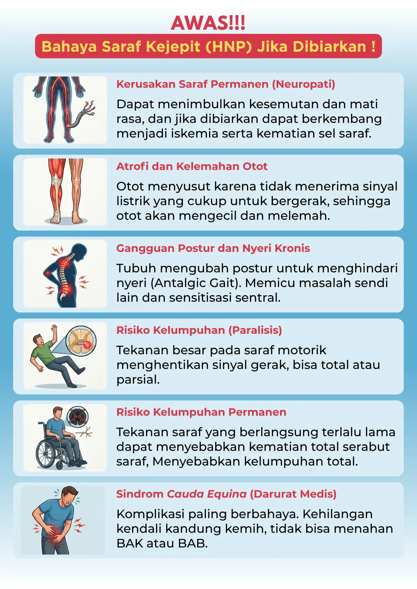
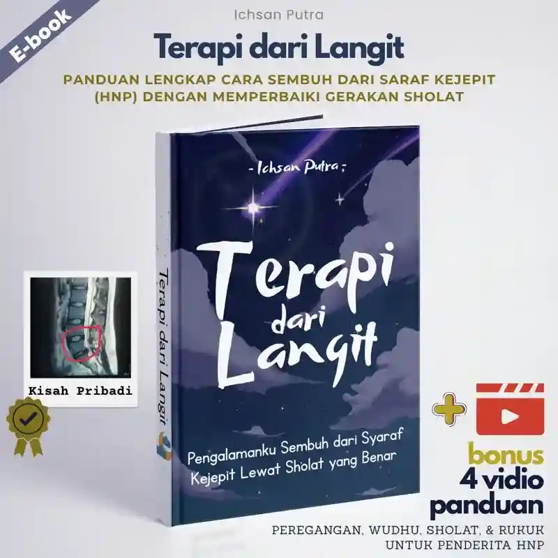
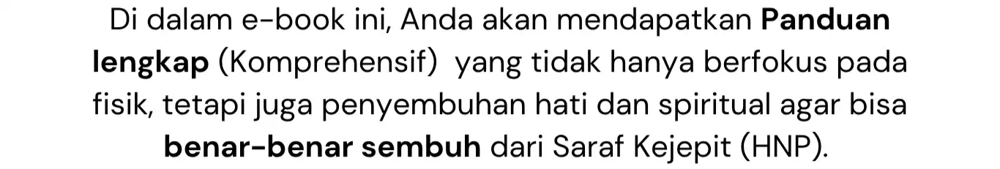
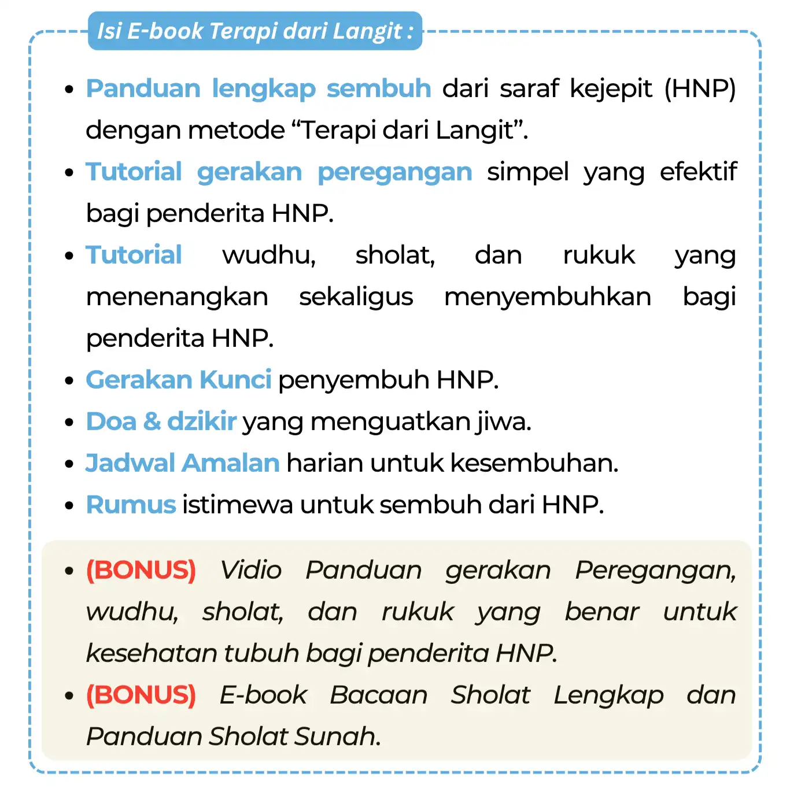
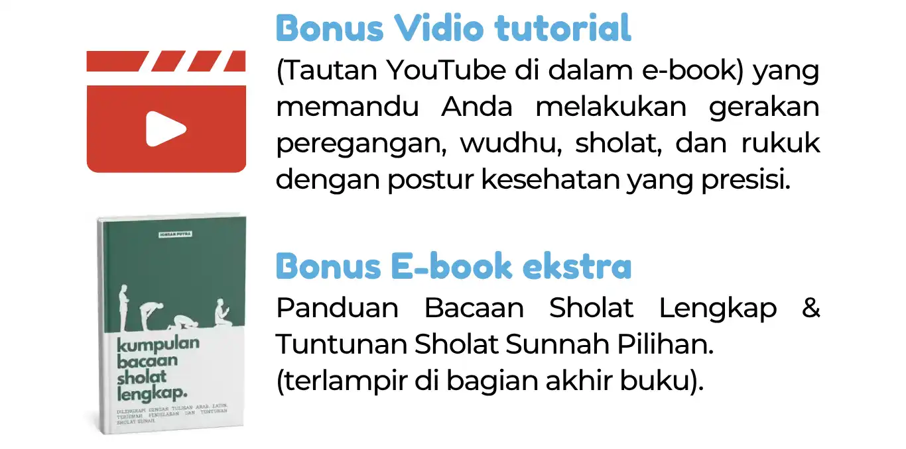
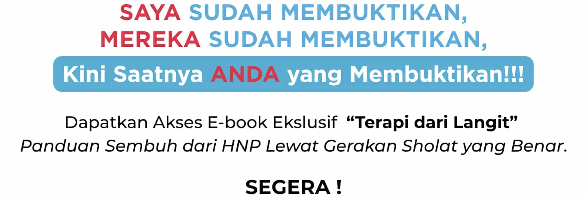
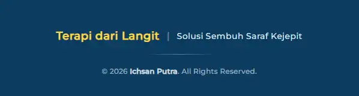

📖 Geser atau scroll kotak di bawah untuk membaca cuplikan E-book


Harga PROMO bisa berubah sewaktu-waktu
*klik untuk membeli E-Book
Pertanyaan Sering Diajukan
Berapa lama waktu yang dibutuhkan untuk pulih?
Pemulihan bersifat individual dan bergantung tingkat keparahannya, Penulis pribadi berhasil mencapai pemulihan optimal dalam kurun waktu 1 hingga 2 bulan. Namun, ada juga testimoni dari pembaca yang telah merasakan perbaikan signifikan hanya dalam 10 hari. Hasil akhir tetap bervariasi bagi setiap individu, namun konsistensi adalah kunci percepatan pemulihan Anda.
Saya hanya mampu sholat dengan duduk, apakah metode ini bisa diterapkan?
Dulu penulis juga merasakan hal yang sama, hanya bisa duduk ketika sholat. Oleh karena itu dalam e-book ini juga diajarkan gerakan peregangan penunjang yang sangat mudah dan efektif berdasarkan pengalaman pribadi penulis, sehingga bisa mengurangi rasa sakit yang muncul ketika melakukan gerakan sholat.
Mengapa E-book ini berbayar?
Selama hampir 2 tahun, Penulis telah menghabiskan banyak waktu, biaya, dan tenaga untuk mencari serta menguji berbagai cara demi sembuh dari HNP. E-book ini adalah jawaban dari pencarian panjang tersebut. Investasi yang Anda berikan bukan sekadar biaya, melainkan bentuk kontribusi agar misi edukasi dan dakwah ini terus berkembang, sekaligus komitmen diri Anda untuk mempraktikkan metode ini secara konsisten sebagai kunci utama dalam meraih kembali kualitas hidup yang sehat.
Bagaimana cara mendapatkan E-book ini?
Klik tombol
“AMBIL AKSES E-BOOK SEKARANG!”, kemudian Anda akan diarahkan ke halaman checkout yang aman.
Setelah pembayaran terkonfirmasi, file e-book langsung dikirim
secara instan ke email Anda.
*pastikan alamat E-mail tidak salah.
